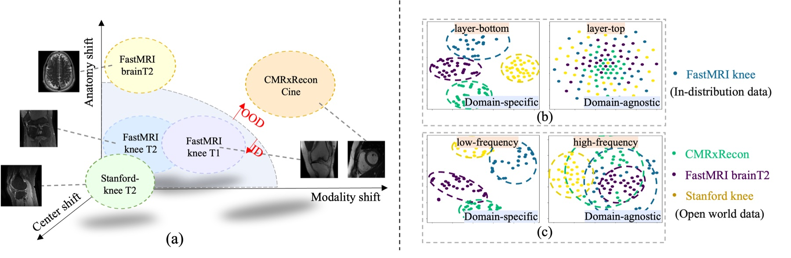
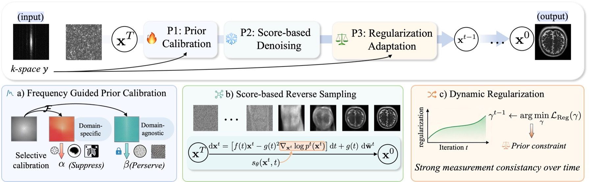
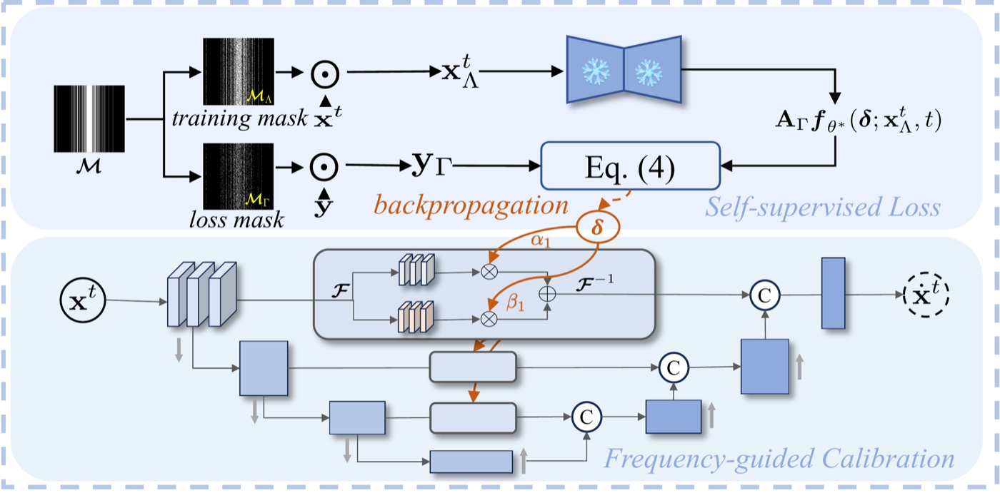
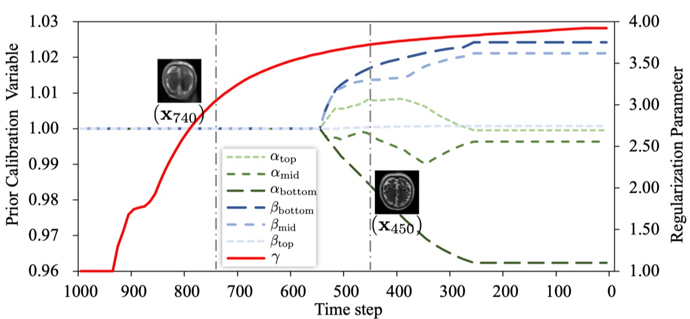
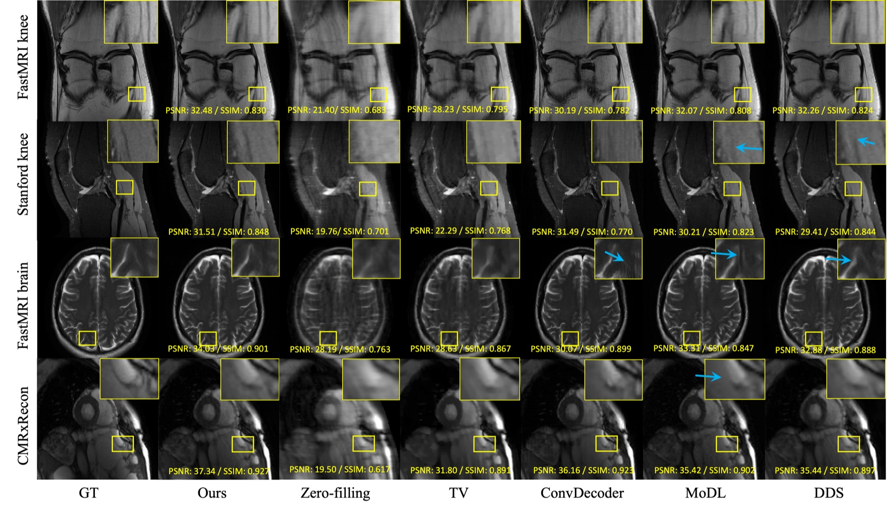

MICCAI 2026 · MRI RECONSTRUCTION / TEST-TIME ADAPTATION
面向开放世界的 MRI 重建：偏置校准适配
Open World MRI Reconstruction with Bias-Calibrated Adaptation
训练集只来自一个中心的一种解剖部位，测试时却要面对别的中心、别的器官、甚至别的模态。这篇论文先做可迁移性分析，发现「深层 + 低频」是领域特异的，「浅层 + 高频」是可迁移的，于是只在测试时用不到 100 个标量去校准前者，并用 SURE 自适应地把正则化参数调到位。
- 原文
- MICCAI 2026 开放获取 PDF（0763_paper.pdf，10 页含参考文献）
- 会议
- MICCAI 2026（录用论文，Springer LNCS 版式）
- 预印本
- arXiv:2603.13466v1 ↗（2026-03-13）
- 代码
- 原文与开放论文页均未给出代码链接
- 规模
- 正文 4 节 · 7 公式 · 5 图 · 3 表 · 24 文献
本页是 Open World MRI Reconstruction with Bias-Calibrated Adaptation 的中英文全文对照翻译，正文以 MICCAI 开放论文页的正式 PDF（0732-Paper0763，PDF 生成于 2026-06-23、修改于 2026-08-26）为准，并用 arXiv:2603.13466v1 的 LaTeX 源码核对公式、表格数字与图注。两者存在差异，正式版在 3.1 节补写了 ESPiRiT 由 SigPy 实现、ACS 保留比例（8% / 4%）、Adam 学习率（1e-4 / 0.3）、5 次共轭梯度迭代、δ 优化 70 步、γ 最多 100 步（约 60 步稳定）等细节，并把表 2 中 MoDL 的 Uniform 1D 8× LPIPS 由 0.020 更正为 0.200；本页一律采用正式版。开放论文页没有补充材料，只有论文 PDF 与评审意见；评审不属于论文正文，本页不翻译。图中只翻译文字，不重绘；网页图片取自源码原始图并缩放压缩，不是 PDF 原像素的逐位副本。所有额外讲解均标为「译者注」，与原文分开。
原文：MICCAI 开放论文页 ↗ · 正式版 PDF ↗ · arXiv 预印本 ↗ · 返回论文条目 →
读之前，先把这条链路分清
这一段是译者注，不是原文。它只做一件事：让你在读到式 (1)–(7) 时，知道每个量在做什么。
- 前向模型：多线圈 MRI 的观测写成 ，其中 ：先乘线圈敏感度、再做离散傅里叶变换、最后用掩膜只保留部分 k 空间行。加速因子 4× 意味着只采约四分之一的 k 空间行。
- 分数先验：扩散/分数模型学的是 ，即在每个噪声尺度下「干净图像该往哪走」。重建时把它当先验，用测量做数据保真约束。
- 交替优化：论文把联合后验拆成三步循环：P1 更新校准变量 （改先验），P2 用校准后的网络去噪（走一步反向采样），P3 用共轭梯度做数据一致性（拉回测量）。式 (1) 是出发点，式 (2) 是拆解结果。
- 为什么只要几十个参数： 只包含每个跳跃连接层的两个标量 ，分别缩放该层特征的低频与高频分量。U-Net 只有几层跳跃连接，所以参数是「几十」而不是「几百万」。
- SURE 在做什么：没有真值就没法直接算 MSE。Stein 无偏风险估计用「对输入加一个小扰动、看输出变化多少」来无偏估计 MSE，于是正则化参数 可以按每张测试图自己的噪声水平来定，而不是沿用训练时的固定值。
- 指标：PSNR、SSIM 越大越好；LPIPS 是感知距离，越小越好。表里的 ± 是测试集上的标准差。
术语速查（译者注）
- k 空间
- MRI 的原始测量空间，即图像的二维傅里叶系数空间；采集一条读出线等于采一条 k 空间的竖线。
- ACS 区域
- k 空间中心的自校准信号区域，用于估计线圈敏感度；本文 4× 与 8× 分别保留中心行的 8% 与 4%。
- ESPiRiT
- 从 ACS 区域用特征值方法估计线圈敏感度图的经典算法，本文用 SigPy 实现。
- MVUE
- 多线圈复数据的最优无偏估计，把多线圈图像合成为单张复图像；本文所有复数数据处理都走这一步。
- DDIM
- 确定性（可跳过步）的扩散反向采样器，本文用 100 步完成反向过程。
- 共轭梯度（CG）
- 求解 型线性系统的迭代法；本文每次数据一致性更新跑 5 次迭代。
- 测试时适配（TTA）
- 不改预训练权重、只针对当前测试样本调整少量参数或超参数的适配方式；本文属于这一类。
- DDS
- Decomposed Diffusion Sampling，本文最强的对照方法，用预训练扩散先验做分解式采样重建，但不做适配。
一句话概括这篇论文（译者注）
把「开放世界适配」拆成两个可分别解决的问题：先验错位（用逐层、分频的标量校准去修）和超参数失配（用 SURE 在测试时自适应地调 ）。全程不需要真值，也不需要重新训练主干网络。
摘要
English original
真实世界的 MRI 重建系统面临开放世界（open-world）挑战：来自未见过的成像中心、解剖结构或采集协议的测试数据，可能与训练数据差异极大，从而导致性能严重下降。现有方法难以应对这一挑战。为此，我们提出 BiasRecon——一个以「最小干预原则：保留可迁移的部分，校准不可迁移的部分」为出发点的偏置校准适配框架。具体而言，BiasRecon 把开放世界适配表述为一个交替优化框架，联合优化三个组件：(1) 频率引导的先验校准，引入逐层校准变量，借助自监督的 k 空间信号选择性地调制预训练分数网络中与频率相关的特征；(2) 基于分数的去噪，利用校准后的生成先验进行高保真图像重建；(3) 自适应正则化，采用 Stein 无偏风险估计（SURE）动态平衡先验与测量之间的权衡，在无需真值的情况下匹配测试时的噪声特性。通过这种交替方案进行最小而精确的干预，BiasRecon 用不到 100 个可调参数就实现了稳健的适配。在四个数据集上的大量实验表明，该方法在开放世界重建任务上达到当前最优性能。
English original
Real-world MRI reconstruction systems face the open-world challenge: test data from unseen imaging centers, anatomical structures, or acquisition protocols can differ drastically from training data, causing severe performance degradation. Existing methods struggle with this challenge. To address this, we propose BiasRecon, a bias-calibrated adaptation framework grounded in the minimal intervention principle: preserve what transfers, calibrate what does not. Concretely, BiasRecon formulates open-world adaptation as an alternating optimization framework that jointly optimizes three components: (1) frequency-guided prior calibration that introduces layer-wise calibration variables to selectively modulate frequency-specific features of the pre-trained score network via self-supervised k-space signals, (2) score-based denoising that leverages the calibrated generative prior for high-fidelity image reconstruction, and (3) adaptive regularization that employs Stein's Unbiased Risk Estimator to dynamically balance the prior-measurement trade-off, matching test-time noise characteristics without requiring ground truth. By intervening minimally and precisely through this alternating scheme, BiasRecon achieves robust adaptation with fewer than 100 tunable parameters. Extensive experiments across four datasets demonstrate state-of-the-art performance on open-world reconstruction tasks.
关键词：开放世界学习 · MRI 重建 · 测试时适配
English original
可迁移性分析：偏移来自哪、模型内部谁变了

English caption
1 引言
English original
MRI 重建的目标是从欠采样的 k 空间测量中恢复高质量图像。传统方法依赖手工设计的先验，例如小波 [11]、全变差 [2] 与低秩约束 [20]。深度学习则通过监督方法 [1][21]、无监督方法 [16][19] 以及基于生成先验的方法 [3][4][9][18]，显著推进了这一领域。
English original
然而，临床部署带来的是性质完全不同的挑战。在实践中，重建模型必须在开放世界条件下工作：测试数据分布未知，且可能与训练分布差异巨大。这类分布偏移可能来自解剖结构、成像协议、扫描仪特性的变化或它们的组合，如图 1(a) 所示。在临床实践中，这种开放世界场景是常态而非例外。
English original
如图 5 所示，现有重建方法在这类分布偏移下会出现显著性能下降。我们假设这种退化来自两个来源：(1) 学到的图像先验与目标分布不再对齐；(2) 在训练数据上调好的超参数对新领域而言不再最优。
English original
一个自然的问题是：在只有单图（single-image）监督的情况下，如何把预训练模型适配到未知分布？我们认为，关键的洞见在于认识到：并非所有学到的知识在分布偏移下都会同等程度地退化。通过可迁移性分析（2.2 节），我们发现深层与低频分量具有领域特异性，而浅层与高频分量保持领域无关，如图 1(b,c) 所示。因此，高效适配必须同时回答两个问题：适配什么，以及适配多少。
English original
基于这一洞见，我们提出 BiasRecon（图 2）：一个以最小干预原则为基础的偏置校准适配框架——保留可迁移的知识，只校准导致退化的那部分。BiasRecon 通过一个交替优化框架把这一原则落到实处，直接针对上述两个退化来源。为纠正错位的先验，频率引导的先验校准自适应地调制逐层、逐频率的分量，以极少的参数实现有效适配；基于分数的去噪则利用校准后的先验完成重建。为处理次优的超参数，自适应正则化依据无需真值的自监督准则，动态调整先验与测量之间的权衡，以匹配每个测试样本的统计特性。这样的原理性设计使 BiasRecon 用不到 100 个可调参数即实现稳健的开放世界适配。
English original
贡献。第一，我们通过可迁移性分析指出：深层与低频分量具有领域特异性，而浅层与高频分量保持可迁移，这为开放世界适配的最小干预原则提供了依据。第二，我们提出 BiasRecon：一个参数少于 100 的交替优化框架，通过频率引导的先验校准与自适应正则化把该原则具体化。第三，我们展示了在开放世界 MRI 重建上的当前最优性能。
English original
BiasRecon 总览：三步交替，两个可调部件

English caption
2 方法
English original
2.1 偏置校准适配框架
English original
MRI 前向模型。在并行加速 MRI 中，多线圈 k 空间得到的观测 可数学地写成 ，其中 是重建图像， 表示高斯噪声， 是第 个线圈的前向算子。这里 编码线圈敏感度图， 表示离散傅里叶变换， 是欠采样掩膜 [6]。对于含 个线圈的多线圈系统，我们写为 。
English original
偏置校准适配。我们采用基于分数的生成模型 [4] 作为先验估计器，由神经网络 近似分数函数 。为应对开放世界 MRI 重建，我们引入一个校准变量 来调制预训练的分数网络，使其适应分布偏移，得到 。给定观测 ，我们通过联合优化 与 完成重建：
English original
把联合后验写成「似然 × 先验 × 校准变量的先验」三者的乘积。
其中 ，而 由分数函数确定。取负对数并引入近端项后，我们把问题拆成三个交替的子问题：
English original
三步循环：P1 校准先验（改 ），P2 去噪（走一步分数更新），P3 数据保真 + 近端项（拉回测量一致）。
对式 (2) 中的 P2，我们推导出一步更新：
English original
2.2 频率引导的先验校准
English original
可迁移性分析。为理解分布偏移如何影响式 (2) 中 P2 的去噪网络，我们通过 t-SNE 可视化分析特征表示，如图 1(b,c) 所示。我们发现：深层网络与低频分量表现出领域特异性（编码膝与脑这类解剖结构），而浅层与高频分量保持领域无关（捕捉可迁移的边缘与纹理）。这一观察促使我们设计一种逐层、逐频率的调制策略：选择性地校准深层中的低频分量，同时保留浅层中的高频表示。
English original
参数高效的校准策略。受上述分析启发，我们把校准变量 具体化为分数网络 U-Net 架构 [13] 上的一个紧凑参数向量。具体来说，对每个跳跃连接层 ，我们用傅里叶变换分解特征，并引入两个可学习标量 分别调制低频与高频分量。于是校准变量定义为 ，对 层网络只引入 个参数，从而实现高效的频率感知适配，如图 3 所示。
English original
频率引导先验校准的内部结构

English caption
重建过程中校准变量与正则化参数的演化

English caption
自监督优化。按上述方式定义 后，对式 (2) 中的 P1，我们在没有真值的情况下优化 ：把测量掩膜划分为两个互补的高斯二维子采样掩膜（）。通过 k 空间投影与概率建模，得到：
English original
只拿 子集重建，再用互补的 子集测量去校验——这就是自监督信号。
其中 表示由 P2 与 P3 得到的重建结果， 控制精度。因此，式 (2) 中的 P1 可以改写为：
English original
其中 ，保证 时保留原始网络。
English original
2.3 正则化参数适配
English original
对式 (2) 中的 P3，正则化参数 平衡测量一致性与先验约束。人工选择对开放世界场景并不理想，因为 与噪声水平相关，而噪声水平应当与图像相关并自适应更新。我们采用 Stein 无偏风险估计（SURE）[24] 结合蒙特卡洛近似 [12]，在无真值的情况下估计 MSE：
English original
SURE 的蒙特卡洛形式：用「加扰动后输出变化多少」替代不可得的真值误差。
其中 ， 是扰动尺度， 表示式 (2) 中 P2 与 P3 的复合映射。为防止过拟合，我们采用基于滑动窗口收敛性的早停：
English original
当 时停止更新。
English original
3 实验
English original
3.1 实验设置
English original
数据集。我们在四个多线圈 MRI 数据集上评估。FastMRI knee [22] 作为训练集（973 个体数据），每个体数据丢弃首尾各 5 层含小目标的切片。我们直接在不重新训练的情况下评估三个开放世界测试集：FastMRI-Brain（跨解剖）、Stanford Knee（跨中心）[10] 与 CMRxRecon（组合偏移）[17]。每个测试集随机选取 100 个体数据，每个体数据取 3 层切片。输入图像通过裁剪与填充统一到 。线圈敏感度图由 ESPiRiT [15] 估计，使用 SigPy Python 包实现。对 4× 与 8× 欠采样，ACS 区域分别保留中心 k 空间行的 8% 与 4%。
English original
训练与推理。我们在 FastMRI knee 上训练分数模型，1M 次迭代，批大小 4，学习率 1e-4。复数数据用 MVUE [7] 处理。我们在 4× 与 8× 加速下测试 Gaussian1D 与 Uniform1D 欠采样。推理时，校准变量 与正则化参数 分别用学习率 1e-4 与 0.3 的 Adam 优化器更新。我们采用 DDIM 采样 [14]，用 100 个时间步加速反向过程，每次数据一致性更新用 5 次共轭梯度迭代求解。 初始化为恒等值并优化 70 步； 初始化为 1，最多优化 100 步，通常在约 60 步后稳定。我们设 ，窗口大小 。
English original
3.2 开放世界评估
English original
FastMRI Knee（同分布） / FastMRI-Brain（跨解剖）
| 方法 | FastMRI Knee（同分布） | FastMRI-Brain（跨解剖） | ||||
|---|---|---|---|---|---|---|
| PSNR↑ | SSIM↑ | LPIPS↓ | PSNR↑ | SSIM↑ | LPIPS↓ | |
| Zero-filling | 19.83±1.52 | 0.691±0.025 | 0.329±0.031 | 23.72±1.83 | 0.785±0.028 | 0.236±0.022 |
| 传统压缩感知（CS）方法 | ||||||
| TV | 26.04±1.63 | 0.771±0.023 | 0.313±0.025 | 28.14±1.86 | 0.817±0.027 | 0.187±0.024 |
| 内部深度图像先验 | ||||||
| ConvDecoder | 29.97±2.15 | 0.745±0.029 | 0.257±0.027 | 31.27±2.73 | 0.876±0.022 | 0.141±0.022 |
| 监督方法 | ||||||
| MoDL | 31.67±1.98 | 0.773±0.028 | 0.215±0.024 | 32.53±0.99 | 0.807±0.064 | 0.137±0.019 |
| 外部深度图像先验 | ||||||
| DDS | 31.64±1.89 | 0.780±0.031 | 0.200±0.021 | 32.46±1.63 | 0.864±0.029 | 0.140±0.016 |
| Ours | 31.76±2.01 | 0.792±0.032 | 0.195±0.018 | 33.65±1.42 | 0.885±0.019 | 0.136±0.025 |
Stanford Knee（跨中心） / CMRxRecon（组合偏移）
| 方法 | Stanford Knee（跨中心） | CMRxRecon（组合） | ||||
|---|---|---|---|---|---|---|
| PSNR↑ | SSIM↑ | LPIPS↓ | PSNR↑ | SSIM↑ | LPIPS↓ | |
| Zero-filling | 19.51±1.48 | 0.691±0.027 | 0.327±0.029 | 22.82±1.76 | 0.676±0.031 | 0.164±0.021 |
| 传统压缩感知（CS）方法 | ||||||
| TV | 24.12±1.72 | 0.788±0.026 | 0.306±0.028 | 31.15±1.92 | 0.804±0.029 | 0.182±0.023 |
| 内部深度图像先验 | ||||||
| ConvDecoder | 30.84±2.25 | 0.753±0.031 | 0.264±0.028 | 34.71±2.42 | 0.854±0.025 | 0.133±0.021 |
| 监督方法 | ||||||
| MoDL | 30.66±1.85 | 0.803±0.029 | 0.203±0.023 | 32.98±1.94 | 0.877±0.021 | 0.143±0.022 |
| 外部深度图像先验 | ||||||
| DDS | 29.23±1.78 | 0.822±0.027 | 0.198±0.022 | 33.72±1.96 | 0.865±0.026 | 0.138±0.019 |
| Ours | 31.29±1.92 | 0.846±0.028 | 0.185±0.021 | 35.32±2.12 | 0.878±0.024 | 0.116±0.020 |
说明：CMRxRecon 列的 SSIM 在原文中 MoDL（0.877）与 Ours（0.878）同时加粗，本页照原文保留（见译者注）。
English caption
8× Gaussian 1D 下的定性对比

English caption
对分布偏移的稳健性
English original
表 1 展示了 BiasRecon 在多种分布偏移下的有效性。在同分布的 FastMRI knee 数据集上，我们的方法通过适配图像特定的噪声水平，略优于各基线。更重要的是，BiasRecon 在所有开放世界场景中都取得最佳性能：跨解剖比 DDS 高 +1.19 dB PSNR，跨中心高 +2.06 dB，组合偏移高 +1.60 dB——后者同时涉及跨解剖、跨中心与跨模态偏移，是最具挑战的场景。这些一致的提升验证了我们假设的两个退化来源：频率引导的先验校准纠正了错位的先验，自适应正则化则针对未见过的采集条件调整先验-测量的权衡。图 5 的定性结果进一步证实，BiasRecon 的重建结果与真值最为一致。
English original
| 方法 | 指标 | Gaussian 1D | Uniform 1D | ||
|---|---|---|---|---|---|
| 4× | 8× | 4× | 8× | ||
| TV | PSNR | 33.65 ± 1.29 | 28.14 ± 1.86 | 28.59 ± 1.69 | 25.71 ± 1.61 |
| SSIM | 0.868 ± 0.017 | 0.817 ± 0.027 | 0.801 ± 0.031 | 0.725 ± 0.043 | |
| LPIPS | 0.136 ± 0.017 | 0.187 ± 0.024 | 0.174 ± 0.028 | 0.254 ± 0.043 | |
| ConvDecoder | PSNR | 33.19 ± 2.41 | 31.27 ± 2.73 | 31.94 ± 2.35 | 26.27 ± 2.86 |
| SSIM | 0.892 ± 0.020 | 0.876 ± 0.022 | 0.860 ± 0.034 | 0.728 ± 0.070 | |
| LPIPS | 0.116 ± 0.026 | 0.141 ± 0.022 | 0.135 ± 0.031 | 0.247 ± 0.052 | |
| MoDL | PSNR | 33.59 ± 1.637 | 32.53 ± 0.99 | 31.96 ± 2.056 | 27.08 ± 1.919 |
| SSIM | 0.871 ± 0.022 | 0.807 ± 0.064 | 0.797 ± 0.064 | 0.659 ± 0.077 | |
| LPIPS | 0.120 ± 0.032 | 0.137 ± 0.019 | 0.125 ± 0.021 | 0.200 ± 0.040 | |
| DDS | PSNR | 34.10 ± 1.97 | 32.56 ± 1.63 | 30.99 ± 1.79 | 27.23 ± 2.03 |
| SSIM | 0.883 ± 0.028 | 0.864 ± 0.029 | 0.851 ± 0.031 | 0.736 ± 0.049 | |
| LPIPS | 0.114 ± 0.015 | 0.140 ± 0.016 | 0.135 ± 0.020 | 0.223 ± 0.040 | |
| Ours | PSNR | 35.03 ± 2.01 | 33.65 ± 1.42 | 32.72 ± 1.92 | 28.40 ± 2.22 |
| SSIM | 0.889 ± 0.032 | 0.885 ± 0.019 | 0.869 ± 0.033 | 0.743 ± 0.041 | |
| LPIPS | 0.110 ± 0.018 | 0.136 ± 0.025 | 0.134 ± 0.023 | 0.211 ± 0.046 | |
English caption
对欠采样的稳健性
English original
我们评估了在不同欠采样算子（包括 Uniform1D 与 Gaussian1D）以及 4× 与 8× 加速因子下的稳健性。为保证实验公平，MoDL 模型同样在 FastMRI knee 数据集上、用这些加速因子（4× 与 8×）的不同采样算子进行训练。表 2 给出定量结果。我们的方法在 12 项研究中有 10 项最优，其余 2 项位列第二，表明其在各种采样模式与加速因子下具有更强的稳健性。
English original
3.3 参数分析
English original
图 4 显示，顶层中的 与 保持稳定，而底层出现明显变化： 下降而 上升，说明领域相关的低频分量被抑制，同时高频细节得以保留。 的逐步上升反映了随重建推进，从先验引导的去噪向测量一致的细化过渡。
English original
3.4 消融研究
English original
| 方法 | PSNR↑ | SSIM↑ | LPIPS↓ |
|---|---|---|---|
| Baseline | 30.23 ± 3.57 | 0.844 ± 0.035 | 0.187 ± 0.028 |
| w/o RPA | 31.28 ± 3.22 (↑ 1.05) | 0.855 ± 0.035 (↑ .011) | 0.183 ± 0.029 (↓ .004) |
| w/o FPC | 32.51 ± 4.04 (↑ 2.28) | 0.853 ± 0.058 (↑ .009) | 0.157 ± 0.065 (↓ .030) |
| Ours (FPC + RPA) | 33.17 ± 3.11 (↑ 2.94) | 0.866 ± 0.041 (↑ .022) | 0.138 ± 0.027 (↓ .049) |
English caption
表 3 验证了我们两个适配组件在跨中心分布偏移下的有效性。两个组件都对重建质量有实质贡献，体现出它们的互补性。频率引导的先验校准（+1.05 dB）通过校准低频分量来适配所学先验，以适应不同成像中心之间对比度、强度分布与扫描仪特有伪影的变化。正则化参数适配（+2.28 dB）动态调整先验-测量的权衡，以匹配测试时的噪声特性与 k 空间采样质量。完整的 BiasRecon 框架取得 +2.94 dB 的提升，说明两个组件具有协同作用。
English original
4 结论
English original
我们提出了 BiasRecon：一个面向开放世界 MRI 重建的偏置校准适配框架，其出发点是最小干预原则——保留可迁移的知识，只校准容易产生偏置的分量。通过可迁移性分析，我们观察到深层与低频分量具有领域特异性，而浅层与高频分量保持领域无关，这促使我们提出频率引导的先验校准与正则化参数适配。通过最小而精确的干预，BiasRecon 以不到 100 个参数在跨中心、跨解剖与跨模态场景下取得当前最优性能。
English original
利益冲突声明
English original
作者声明没有与本文内容相关的利益冲突。
English original
图表索引
序号与原文一致。图 1–2 在正文前部（第 1–2 页），图 3–4 在 2.2 节（第 4 页），图 5 在 3.2 节（第 7 页）；表 1 在第 3.2 节，表 2、表 3 在第 3.2 与 3.4 节。编号公式 (1)–(7) 全部在 2 节。
译者注
以下是译者在核对原文与源码时发现、需要读者留意的地方。它们不是原文内容。
- Tweedie 公式的引用编号。原文在式 (3) 之后写「 is derived from Tweedie's formula [8]」，而参考文献 [8] 是 Knoll 等关于学习型重建泛化性与迁移学习的论文，并非 Tweedie 公式的出处。译文按原文保留 [8]，不擅自替换。
- 表 1 的双下划线值。CMRxRecon 一列的 SSIM 在原文中 MoDL（0.877±0.021）与 Ours（0.878±0.024）同时加粗，两行都被标成最优。本页照原文转录，图表索引里也保留这一状态。
- 「不到 100 个参数」与 。正文只说明校准变量有 个标量，未给出 U-Net 的跳跃连接层数 ；按常见的 4 层跳跃连接推算应为 8 个左右。「少于 100」应是把 与 等测试时标量一并计入的上界表述。
- 表 2 的一处更正。arXiv 预印本中 MoDL 在 Uniform 1D、8× 下的 LPIPS 为 0.020±0.040（明显是笔误），正式版改为 0.200±0.040，本页采用正式版的 0.200。
- 消融与正文的对应关系。表 3 中「w/o RPA」一行相对 Baseline 的 +1.05 dB 就是只有 FPC 时的增益，「w/o FPC」一行的 +2.28 dB 就是只有 RPA 时的增益；正文写作「Frequency-guided prior calibration (+1.05 dB)」「Regularization parameter adaptation (+2.28 dB)」，两者一致，只是叙述顺序与表格行序相反。
- 「single-image supervision」的含义。指只用单张测试图像的测量做自监督，不是单张训练图。
- 关于复现。原文与 MICCAI 开放论文页都没有给出代码或补充材料；本页不提供复现信息。
参考文献
共 24 条，编号与原文列表一致；正文用方括号数字引用。每条下方给出中文标题（译者译）。
- [1]
Aggarwal, H.K., Mani, M.P., Jacob, M.: Modl: Model-based deep learning architecture for inverse problems. IEEE transactions on medical imaging 38(2), 394–405 (2018)
MoDL：面向逆问题的模型驱动深度学习架构
- [2]
Block, K.T., Uecker, M., Frahm, J.: Undersampled radial mri with multiple coils. iterative image reconstruction using a total variation constraint. Magnetic Resonance in Medicine: An Official Journal of the International Society for Magnetic Resonance in Medicine 57(6), 1086–1098 (2007)
多线圈欠采样径向 MRI：使用全变差约束的迭代图像重建
- [3]
Chung, H., Lee, S., Ye, J.C.: Decomposed diffusion sampler for accelerating large-scale inverse problems. In: The Thirteenth International Conference on Learning Representations (2024)
用于加速大规模逆问题的分解式扩散采样器（DDS）
- [4]
Chung, H., Ye, J.C.: Score-based diffusion models for accelerated mri. Medical image analysis 80, 102479 (2022)
用于加速 MRI 的基于分数的扩散模型
- [5]
Darestani, M.Z., Heckel, R.: Accelerated mri with un-trained neural networks. IEEE Transactions on Computational Imaging 7, 724–733 (2021)
用未训练神经网络做加速 MRI（ConvDecoder）
- [6]
Geethanath, S., Reddy, R., Konar, A.S., Imam, S., Sundaresan, R., DR, R.B., Venkatesan, R.: Compressed sensing mri: a review. Critical Reviews in Biomedical Engineering 41(3) (2013)
压缩感知 MRI：综述
- [7]
Jalal, A., Arvinte, M., Daras, G., Price, E., Dimakis, A.G., Tamir, J.: Robust compressed sensing mri with deep generative priors. Advances in Neural Information Processing Systems 34, 14938–14954 (2021)
用深度生成先验的鲁棒压缩感知 MRI
- [8]
Knoll, F., Hammernik, K., Kobler, E., Pock, T., Recht, M.P., Sodickson, D.K.: Assessment of the generalization of learned image reconstruction and the potential for transfer learning. Magnetic resonance in medicine 81(1), 116–128 (2019)
学习型图像重建的泛化性评估与迁移学习的潜力
- [9]
Liu, Q., Yang, Q., Cheng, H., Wang, S., Zhang, M., Liang, D.: Highly undersampled magnetic resonance imaging reconstruction using autoencoding priors. Magnetic resonance in medicine 83(1), 322–336 (2020)
使用自编码先验的高度欠采样 MRI 重建
- [10]
Ong, F., Amin, S., Vasanawala, S., Lustig, M.: Mridata.org: An open archive for sharing mri raw data. In: Proc. Intl. Soc. Mag. Reson. Med. vol. 26 (2018)
Mridata.org：共享 MRI 原始数据的开放档案
- [11]
Qu, X., Guo, D., Ning, B., Hou, Y., Lin, Y., Cai, S., Chen, Z.: Undersampled mri reconstruction with patch-based directional wavelets. Magnetic resonance imaging 30(7), 964–977 (2012)
基于图像块方向小波的欠采样 MRI 重建
- [12]
Ramani, S., Blu, T., Unser, M.: Monte-carlo sure: A black-box optimization of regularization parameters for general denoising algorithms. IEEE Transactions on image processing 17(9), 1540–1554 (2008)
蒙特卡洛 SURE：通用去噪算法正则化参数的黑箱优化
- [13]
Ronneberger, O., Fischer, P., Brox, T.: U-net: Convolutional networks for biomedical image segmentation. In: Medical image computing and computer-assisted intervention–MICCAI 2015: 18th international conference, Munich, Germany, October 5-9, 2015, proceedings, part III 18. pp. 234–241. Springer (2015)
U-Net：用于生物医学图像分割的卷积网络
- [14]
Song, J., Meng, C., Ermon, S.: Denoising diffusion implicit models. International Conference on Learning Representations (2021)
去噪扩散隐式模型（DDIM）
- [15]
Uecker, M., Lai, P., Murphy, M.J., Virtue, P., Elad, M., Pauly, J.M., Vasanawala, S.S., Lustig, M.: Espirit—an eigenvalue approach to autocalibrating parallel mri: where sense meets grappa. Magnetic resonance in medicine 71(3), 990–1001 (2014)
ESPiRiT——自校准并行 MRI 的特征值方法：SENSE 与 GRAPPA 的交汇
- [16]
Ulyanov, D., Vedaldi, A., Lempitsky, V.: Deep image prior. In: Proceedings of the IEEE conference on computer vision and pattern recognition. pp. 9446–9454 (2018)
深度图像先验（DIP）
- [17]
Wang, C., Lyu, J., Wang, S., Qin, C., Guo, K., Zhang, X., Yu, X., Li, Y., Wang, F., Jin, J., et al.: Cmrxrecon: A publicly available k-space dataset and benchmark to advance deep learning for cardiac mri. Scientific Data 11(1), 687 (2024)
CMRxRecon：面向心脏 MRI 深度学习的公开 k 空间数据集与基准
- [18]
Wang, S., Lv, J., He, Z., Liang, D., Chen, Y., Zhang, M., Liu, Q.: Denoising auto-encoding priors in undecimated wavelet domain for mr image reconstruction. Neurocomputing 437, 325–338 (2021)
用于 MR 图像重建的非抽取小波域去噪自编码先验
- [19]
Yaman, B., Hosseini, S.A.H., Akcakaya, M.: Zero-shot self-supervised learning for mri reconstruction. International Conference on Learning Representations (2022)
用于 MRI 重建的零样本自监督学习
- [20]
Yang, A.C., Kretzler, M., Sudarski, S., Gulani, V., Seiberlich, N.: Sparse reconstruction techniques in magnetic resonance imaging: methods, applications, and challenges to clinical adoption. Investigative radiology 51(6), 349–364 (2016)
磁共振成像中的稀疏重建技术：方法、应用与临床落地挑战
- [21]
Yang, Y., Sun, J., Li, H., Xu, Z.: Admm-csnet: A deep learning approach for image compressive sensing. IEEE transactions on pattern analysis and machine intelligence 42(3), 521–538 (2018)
ADMM-CSNet：图像压缩感知的深度学习方法
- [22]
Zbontar, J., Knoll, F., Sriram, A., Murrell, T., Huang, Z., Muckley, M.J., Defazio, A., Stern, R., Johnson, P., Bruno, M., et al.: fastmri: An open dataset and benchmarks for accelerated mri. arXiv preprint arXiv:1811.08839 (2018)
fastMRI：加速 MRI 的开放数据集与基准
- [23]
Zhang, R., Isola, P., Efros, A.A., Shechtman, E., Wang, O.: The unreasonable effectiveness of deep features as a perceptual metric. In: CVPR (2018)
深度特征作为感知度量的惊人有效性（LPIPS）
- [24]
Zhussip, M., Soltanayev, S., Chun, S.Y.: Extending stein's unbiased risk estimator to train deep denoisers with correlated pairs of noisy images. Advances in neural information processing systems 32 (2019)
把 Stein 无偏风险估计扩展到用相关含噪图像对训练深度去噪器